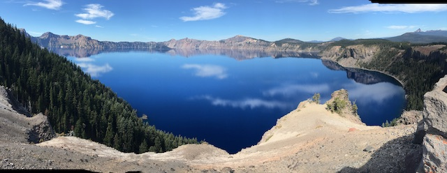

This is a project to provide information on resources for sustainable solutions that will enable the survival of humankind on this planet. In todays continuous challenges of denial, mistruths, and ego driven aristocracy and corporatocracy
we need to be able to provide information regarding hopeful projects that will provide longterm solutions.
I have been interested in the health of the planet and our environment since being introduced to recycling programs in the 1970's.
Everything in nature is there for a reason. There is no waste. The output of something feeds
another; be it plant or animal.
It makes sense to enable a healthy environment not only for ourselves and our loved ones, but for everyone on the planet as it provides a calmness that enables more peaceful results.
What I Believe
-
I believe in every situation with others and nature: "To Infinity and Beyond - Choose Kindness"
-
I believe that the Source Force Energy runs through everything, resting in none, with the intention of loving and enabling each to its highest potential. Then it observes.
-
I believe Diversity provides the strongest potential for success in every environment and situation. Obvious in nature. Not so much in society. Diversity, with love, is to be embraced; it is where strength is experienced at its
greatest.
-
I believe There is only the human race. It can be broken out by kinship, and ethnicity. Discrimination of any kind is an injustice, weakens our species, and threatens our survival.
-
I believe Humans have free will as a potential for their highest.
-
I believe Each moment provides unlimited potential.
-
I believe Decision is our greatest ally.
-
I believe Every Decision is our choice to reach for a higher potential, and the greatest teacher for what does not work. Pay attention and adjust towards a higher purpose with love. Maya Angelou — “When you know better, do better”.
-
I believe Ethics and Morals create higher purpose in our life lived.
-
I believe We are here to support each other in all situations with love and empathy.
-
I believe Sustainability, with love, is possible in all circumstances.
-
I believe Sustainability, with love, is our Responsibility.
-
I believe the Ego is necessary, but must be understood and consciousness enabled to move us away from instinct of self centered towards intent for cohesiveness. United in love with self, each other and every other species as well as
all nature.
-
I believe A New Way Of Thinking - WE ARE ONE - Is Possible!
I have felt for a long time that we are on the edge of the next step in human consciousness. I am now 77 years old and feel that Valarie Kaur's book “See No Stranger” offers a context for resolving the conflicts in interactions with
others in my life, my opponents, and myself. Now is the time! Let us believe, and act with intent and purpose.